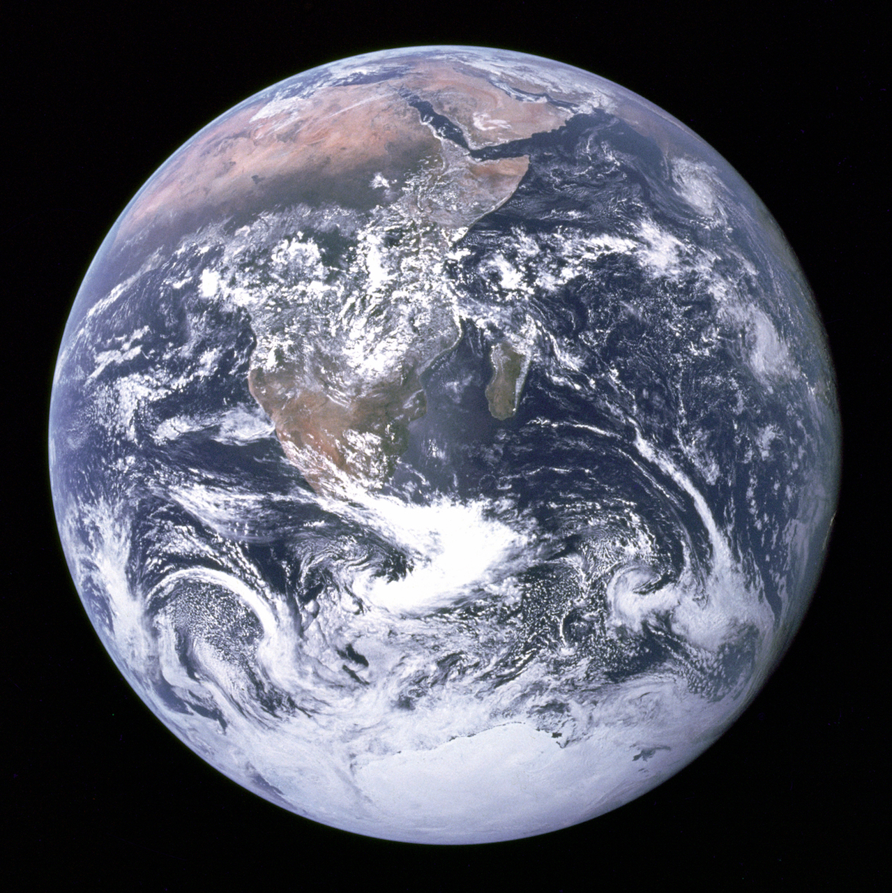

LA TIERRA
La Tierra (del latín Terra, deidad romana equivalente a Gea, diosa griega de la feminidad y la fecundidad) es un planeta del sistema solar que gira alrededor de su estrella —el Sol— en la tercera órbita más interna. Es el más denso y el quinto mayor de los ocho planetas del sistema solar. También es el mayor de los cuatro terrestres o rocosos. 
La Tierra se formó hace aproximadamente 4550 millones de años y la vida surgió unos mil millones de años después. Es el hogar de millones de especies, incluidos los seres humanos y actualmente el único cuerpo astronómico donde se conoce la existencia de vida. La atmósfera y otras condiciones abióticas han sido alteradas significativamente por la biosfera del planeta, favoreciendo la proliferación de organismos aerobios, así como la formación de una capa de ozono que junto con el campo magnético terrestre bloquean la radiación solar dañina, permitiendo así la vida en la Tierra.
LA CORTEZA TERRESTRE
La superficie terrestre o corteza está dividida en varias placas tectónicas que se deslizan sobre el magma durante periodos de varios millones de años. La superficie está cubierta por continentes e islas; estos poseen varios lagos, ríos y otras fuentes de agua, que junto con los océanos de agua salada que representan cerca del 71 % de la superficie constituyen la hidrósfera. No se conoce ningún otro planeta con este equilibrio de agua líquida,nota que es indispensable para cualquier tipo de vida conocida.